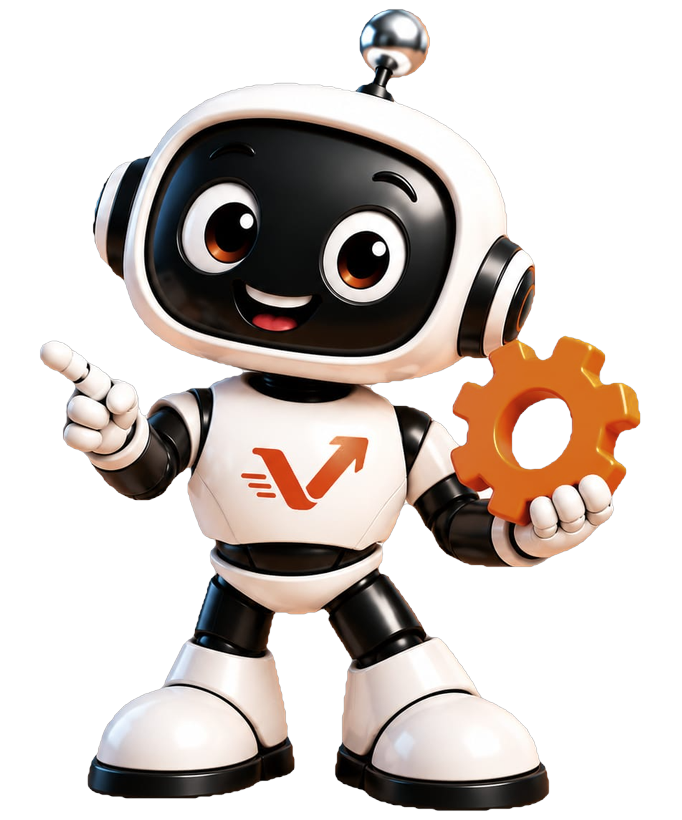
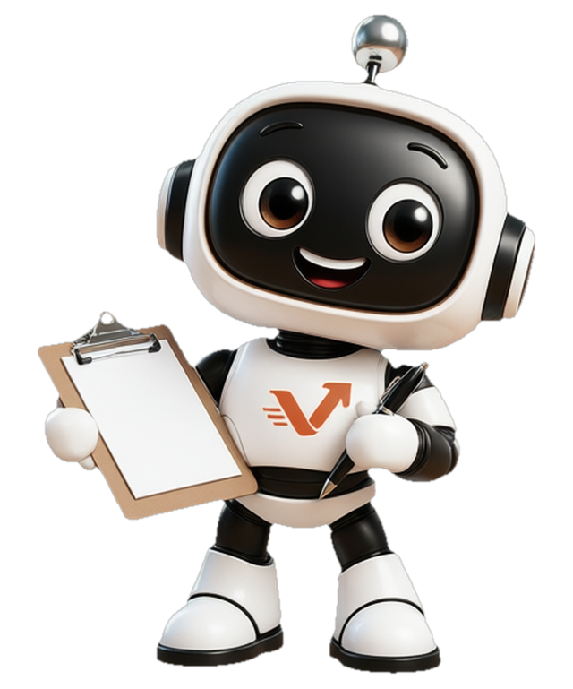

1Einfache Automation
- Bitte um Bewertung Auftrag abgenommen → Bitte um Bewertung
- Rapport-Foto ablegen WhatsApp-Foto → Projektordner, benannt
- Zahlungseingang abgleichen QR-Zahlung → offene Rechnung → bezahlt
AUTOMATIONEN

BAUSTEINE
Eine Automation ist kein Produkt aus dem Regal. Sie besteht immer aus denselben fünf Teilen, die wir für Ihren Betrieb zusammensetzen.

1Etwas kommt rein
Der Anstoss: Etwas trifft bei Ihnen ein, auf welchem Weg auch immer.
2Informationen werden geprüft
Nach festen Regeln oder mit KI, wenn sie dafür sinnvoll ist.

3Es wird entschieden
Nach Ihren Regeln: Manches läuft durch, anderes wartet auf Ihr OK.
4Etwas passiert
Das Ergebnis landet dort, wo Sie arbeiten: im Programm, im Ordner, beim Kunden.
5Sie erfahren davon
Sie behalten den Überblick, ohne nachschauen zu müssen.
Jedes Beispiel weiter unten ist eine Kombination aus diesen Teilen. Ihres auch.
AUS DER PRAXIS
Was in Ihrer Branche von selbst laufen kann:
1Einfache Automation
2Mittelgrosse Automation
3Komplette Automation
Richtpreise, inkl. 8,1 % MWST. Verbindlich ist der Fixpreis nach der Erstanalyse.
Betreuung auf Wunsch: Überwachung, Fehlerbehebung und laufende Anpassungen für alle Automationen und Chatbots, die wir für Sie gebaut haben.
Einfache Automation, zum Beispiel der kleine Ablauf: Ein Auslöser, eine Regel, ein Zielprogramm (das Programm, in dem das Ergebnis landet), ohne weitere Anbindung.
Mittelgrosse Automation: Mittlere Abläufe verbinden Programme oder ergänzen eine Entscheidung oder Freigabe. Der genaue Umfang steht beim gewählten Angebot.
Komplette Automation, zum Beispiel der Auftragsablauf: Anfrage, Offerte, Auftrag, Rechnung mit bis zu drei Programmen über fertige Verbindungen (Standard-Connectoren), Daten je Programm in eine Richtung, bis 15 Felder je Übergabe. Rückmeldungen an ein Programm, Altsysteme und weitere Programme sind zusätzliche Anbindungen.
Abgenommen ist ein Ablauf, wenn der Normalfall, fehlende und falsche Daten, ein Schnittstellenausfall und eine Doppelauslösung geprüft sind und die Rechte stimmen.
Doppelauslösung heisst: Dasselbe Ereignis kommt zweimal an, etwa eine Rechnung, die zweimal gemailt wird. Der Ablauf darf sie trotzdem nur einmal verarbeiten.
Mängel beheben wir 90 Tage nach der Übergabe ohne Rechnung.
Wenn eine Automation ein weiteres Programm braucht, kommt die Anbindung dazu. Es gibt zwei Wege: den Standard-Connector, also eine fertige Verbindung zwischen Programmen, oder eine individuelle Anbindung.
Anbindung, Standard-Connector
Für gängige Programme mit fertigem Connector: Bexio, Google Workspace, Microsoft 365, HubSpot, Make oder Zapier.
Anbindung, individuell
Wenn kein Standard-Connector passt, etwa bei Branchensoftware, Kundenverzeichnis oder Altsystemen.
IN 22 SEKUNDEN
Belege, Offerten und Freigaben laufen von selbst. Ihr Fall steht im Feld darunter.
IHR FALL
Beschreiben Sie, was bei Ihnen jede Woche Zeit frisst. Unsere Einordnung bekommen Sie per E-Mail: welcher Umfang zu Ihrem Fall passt, und ob ein Standard reicht oder es individuell wird. Das Angebot schauen wir danach persönlich mit Ihnen an.
Unterwegs
Die Einordnung ist unterwegs.
Sie bekommen sie an , in der Regel innert eines Arbeitstages. Wir melden uns, wenn etwas offen ist.
Eine Einordnung, keine verbindliche Offerte. Ob Standard oder individuell, klären wir gemeinsam in der Erstanalyse.